Notre mission — 01
Des Ailes pour la Science
En partenariat avec des entités de recherche et de conservation qui agissent tout autour de la planète pour protéger l'environnement, nous produisons des données ou méthodes nouvelles pour appuyer leurs démarches.
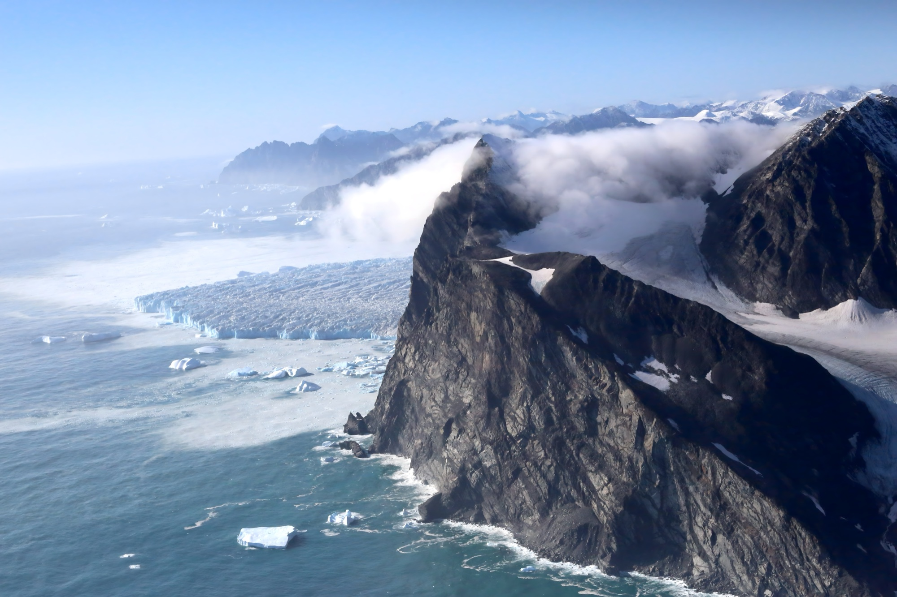
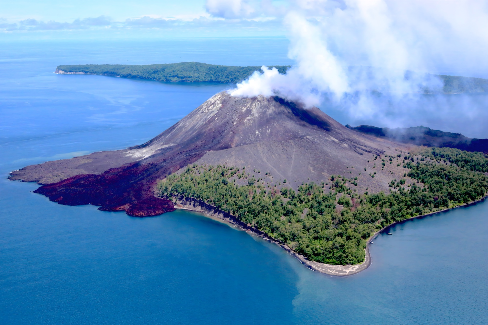
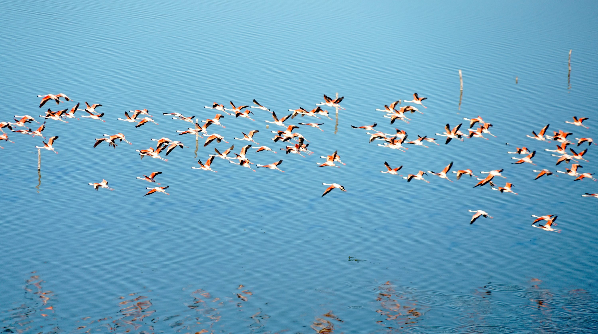

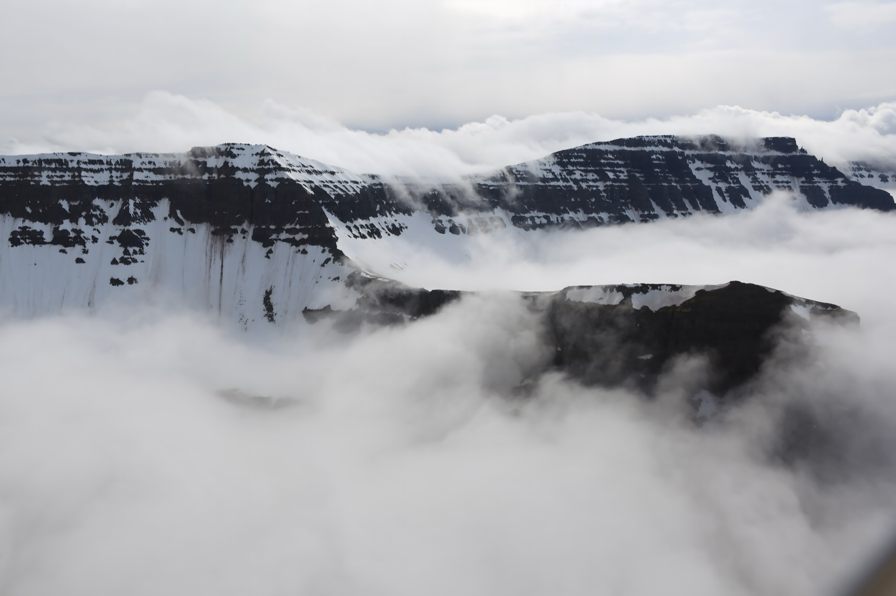
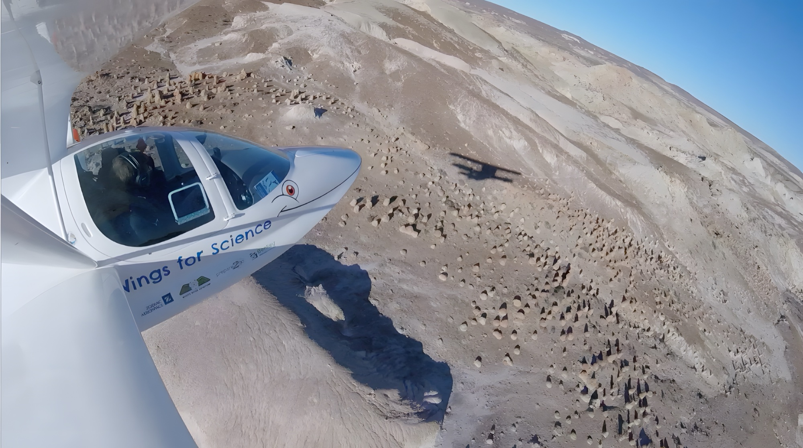
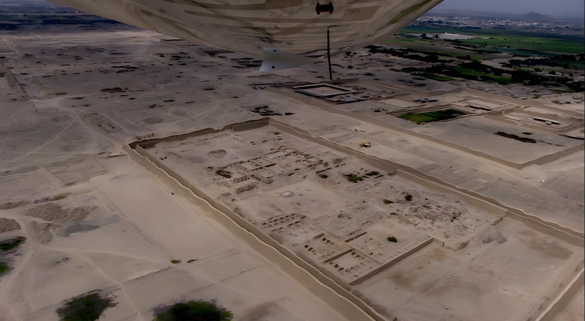
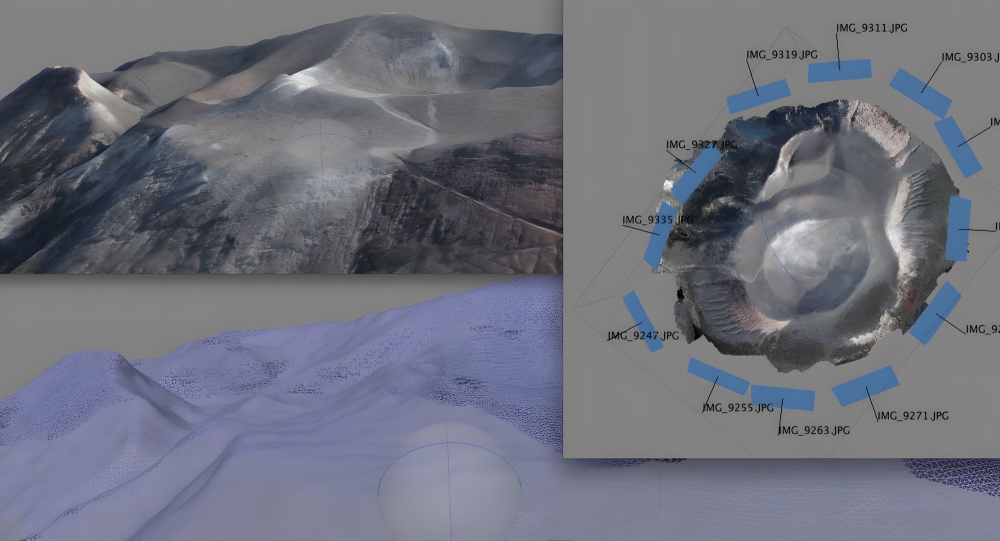
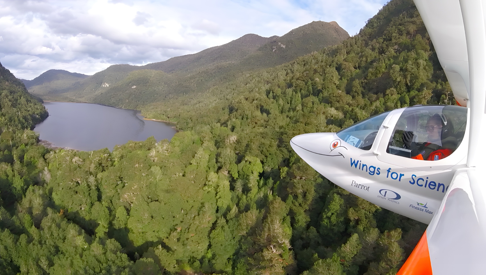
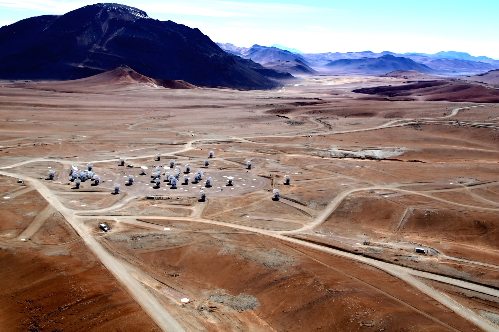
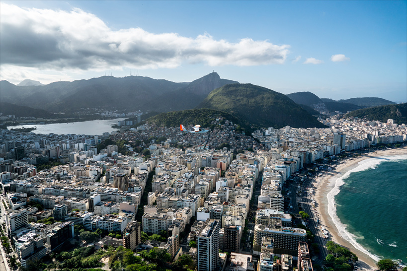
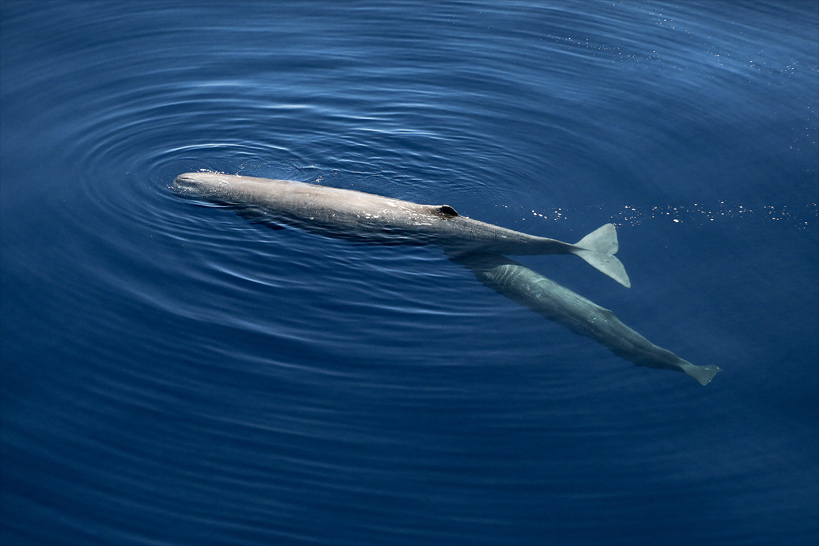
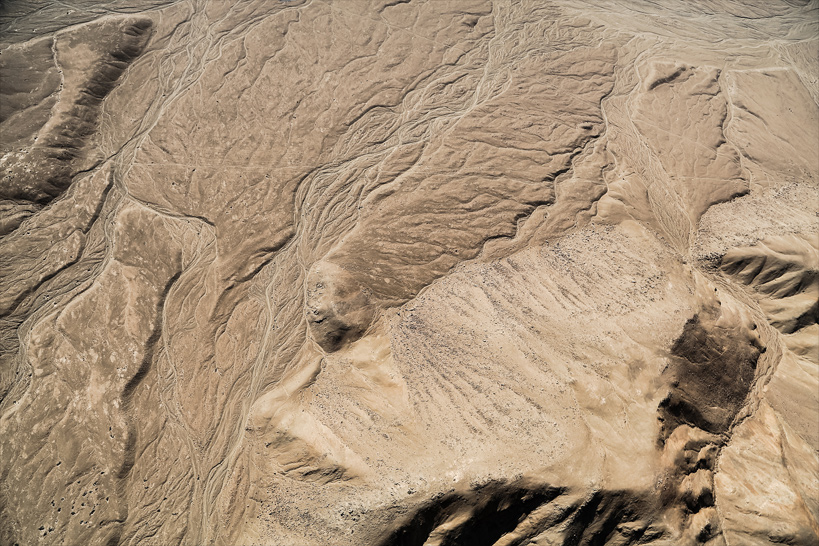
Nous contactons des laboratoires, parcs naturels et ONG pour comprendre leurs besoins en données aériennes et en imagerie.
Grâce à nos machines aériennes adaptées, nous survolons les zones d'étude pour produire photos, vidéos, modèles 3D et relevés.
Les données sont remises aux scientifiques. Elles contribuent à des publications, des suivis environnementaux et des prises de décision.
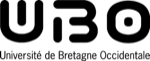
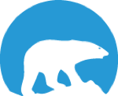
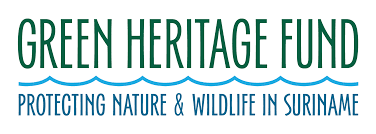
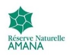
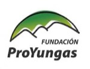
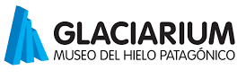
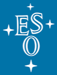
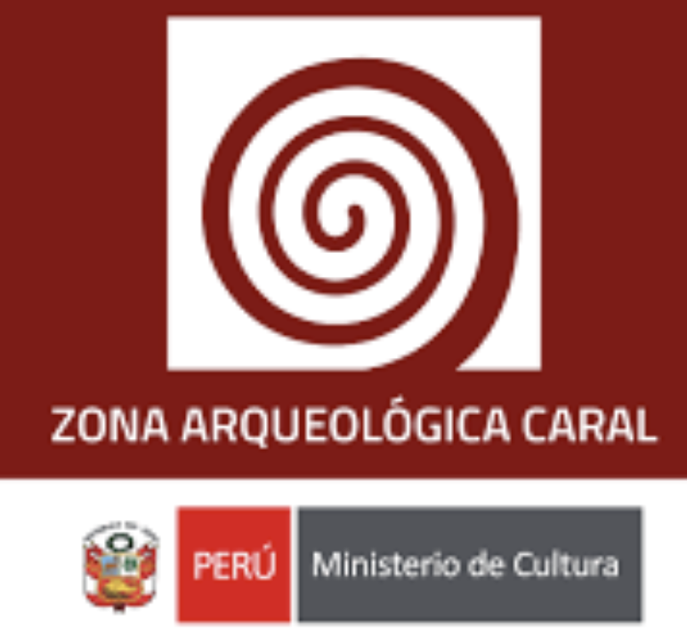
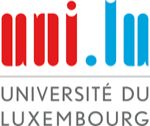
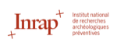
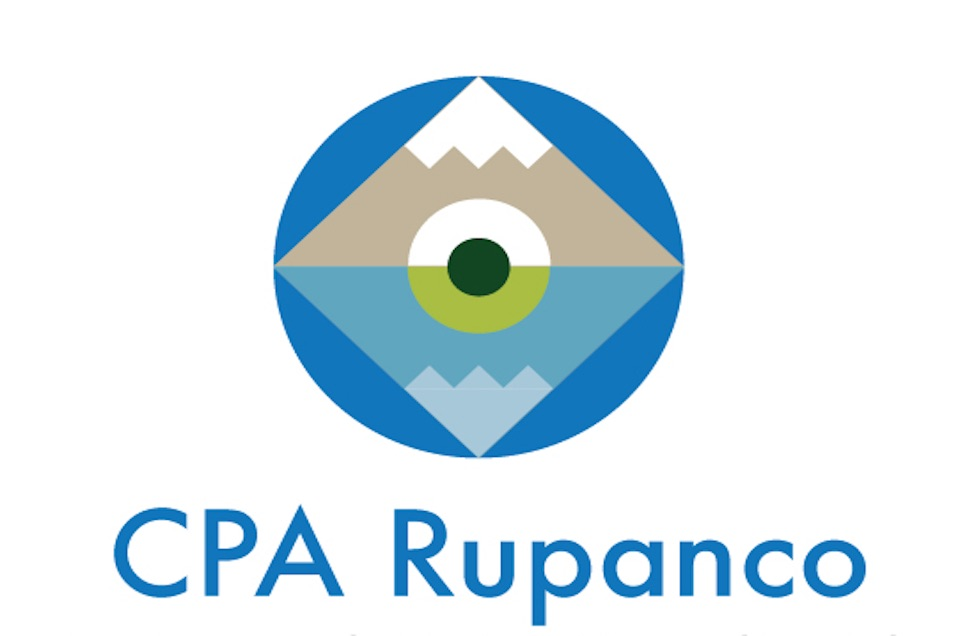